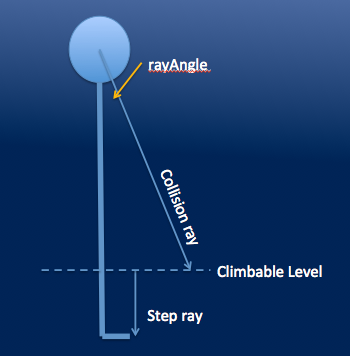

(C) 2013 by Jason Leigh, Electronic Visualization
Laboratory, University of Illinois at Chicago
Walkabout is a python module for Omegalib that provides ground collision and wall collisions for CAVE2 applications that have a need for users to navigate a virtual space where they can climb stairs, jump off platforms, and not walk through walls.
The demo.py file
contains an example of how to use the module. It also provides a
simple scene in which one can navigate the space to test
Walkabout. When running on the desktop use the standard WASD
keys to walk around the space and click and drag on the mouse to
turn. In CAVE2 simply use the wand to navigate. You can also
physically walk through the space. Walkabout will automatically
adjust terrain height to create the illusion that you are
walking on the geometry. Similarly attempts to walk into a wall
will force the virtual world backwards to prevent you from going
through. All that said it is still possible to crash through
walls by simply navigating far too quickly through them.
Documentation on the
API can be found HERE.
Walkabout works by
firing two rays into the scene. One straight down (step ray)
from the "knees" (climbable level) and one "forward" and
slightly downward from your head (collision ray). I say
"forward" because it is actually firing the ray in the direction
in which you are walking whether it's forwards, backwards, or
sideways. The step ray determines how high you need to be moved
up or down in the world. The collision ray determines if you
have run into a wall or a relatively high object like a table.
When a collision is detected Walkabout moves the CAVE2 camera
back to the spot before you were before the collision. For floor
collision interpolation is also used so that moving up a step or
falling to a lower platform isn't done instantaneously. Rather
it is done over a sequence of frames so that there is a smooth
transition.
In the API it is
possible to alter the height of your knee/climbable level as
well as the angle for the collision ray. The knee is specified
as a proportion of your head height. So for example, 0.3 means
0.3 x head height.
